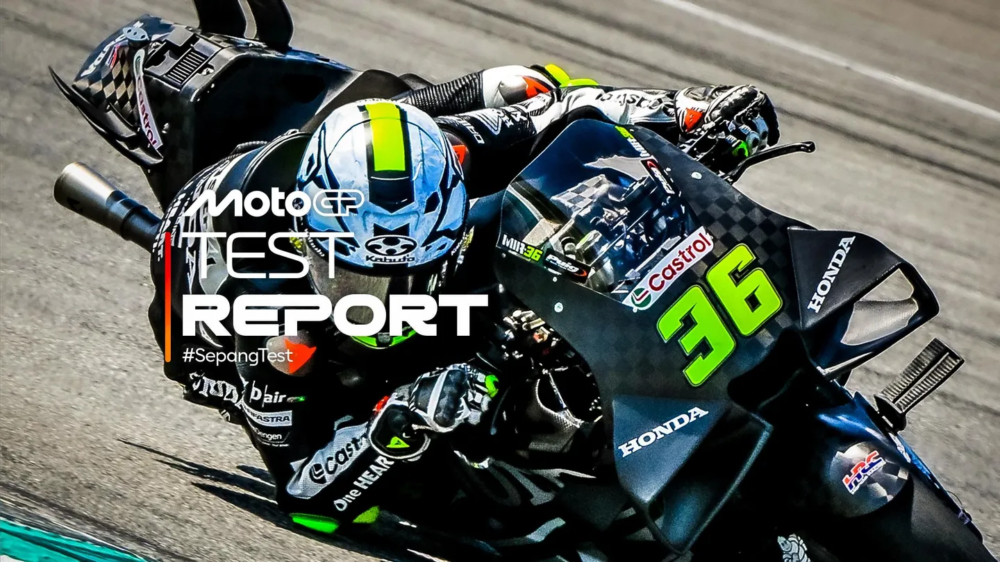

Mir coloca a Honda en lo más alto antes de que la lluvia irrumpa en Sepang
Honda y VR46 se llevan los tres primeros puestos, mientras Yamaha deja todas sus motos en el box durante la segunda jornada de acción en Malasia

Joan Mir (Honda HRC Castrol) lideró la segunda jornada del Test de Sepang, logrando una vuelta destacada y convirtiéndose en el piloto Honda más rápido de la historia en este circuito, superando incluso el mejor tiempo del piloto de pruebas Aleix Espargaró durante el Shakedown de la semana pasada.
Franco Morbidelli se colocó en segundo lugar, justo por delante de su compañero de equipo, Fabio Di Giannantonio.